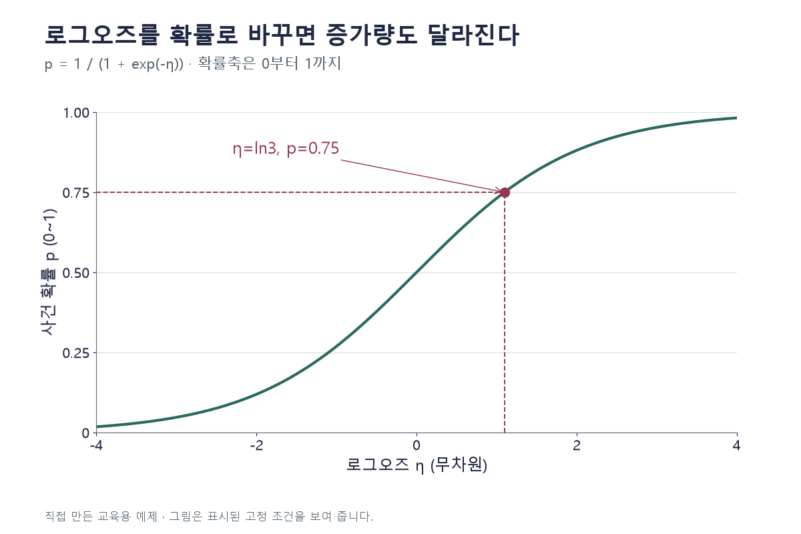

핵심 이론
이진 로지스틱 회귀는 p 자체가 아니라 log[p/(1−p)]를 선형식 η=β₀+β₁x로 표현한다. p는 0과 1 사이의 사건 확률이고, 오즈 p/(1−p)는 사건 대 비사건의 비다. 선형식을 계산한 뒤 sigmoid를 적용해야 확률이 된다. η를 바로 백분율로 읽지 않는다.
다른 변수를 고정했을 때 x가 1 증가하면 로그오즈는 β₁만큼 증가하고 오즈는 exp(β₁)배가 된다. 예를 들어 β₁=ln2라면 오즈가 두 배다. 시작 확률이 0.5일 때는 오즈 1이 2가 되어 확률은 2/3이다. 0.5를 두 배 하여 1로 만드는 계산과 다르다.
확률을 범주로 바꾸는 문턱은 또 다른 선택이다. p=0.75를 얻었더라도 0.5 문턱이면 양성, 0.8 문턱이면 음성으로 분류된다. 계수는 조건부 연관을 요약하며 관측 자료만으로 인과효과를 보장하지 않는다. 확률 계산, 계수 해석, 최종 분류를 섞지 않아야 한다.
작은 예제로 확인하기
선형식 η=ln3인 한 관측을 생각한다. exp(η)=3이므로 오즈는 3:1이다.
| 표현 | 값 |
|---|---|
| 로그오즈 | ln3 |
| 오즈 | 3 |
| 확률 | 3/(1+3)=0.75 |
오즈의 3은 300%의 확률이 아니다. 사건 세 몫과 비사건 한 몫을 합한 네 몫 중 사건이 세 몫이다.
그림으로 확인하기

직접 고르기
이진 로지스틱 모형에서 한 관측의 선형식 η=ln3이다.
사건 확률 p는?
- 1. 0.25
- 2. 0.50
- 3. 0.75
- 4. 3.00
정답과 오답의 이유 확인하기
정답 3번 — 0.75
오즈 exp(ln3)=3이므로 p=3/(1+3)=0.75다.
- 1번: 사건과 비사건을 바꾸었을 때의 확률이다.
- 2번: 선형식 η=0일 때의 값이다.
- 4번: 오즈 3을 확률로 오인했다.
조건 하나 바꾸어 풀기
현재 p=0.5이고 어떤 변수의 계수가 ln2다. 다른 조건을 고정해 그 변수를 1 높이면 p는?
풀이: 2/3, 약 0.667.
기존 오즈는 1이고 두 배가 되면 2다. 오즈 2를 확률로 바꾸면 2/(1+2)다.
다시 떠올릴 단서
계수는 로그오즈, 지수는 오즈의 배수.
근거와 적용 조건
- scikit-learn Linear Models — 1.1.11 Logistic regression: 이진 로지스틱 확률식. 확인일 2026-10-30.
상황·수치·보기·조건 변경은 자체 교육 예제다. 민간 복원 문항의 공식 정답이나 실제 성능·학습 효과를 뜻하지 않는다.
읽은 내용을 적용해 보기
상호작용 없는 해당 선형항에서 다른 변수를 고정한 변화다. 인과효과나 잘 보정된 확률을 보장하지 않는다.